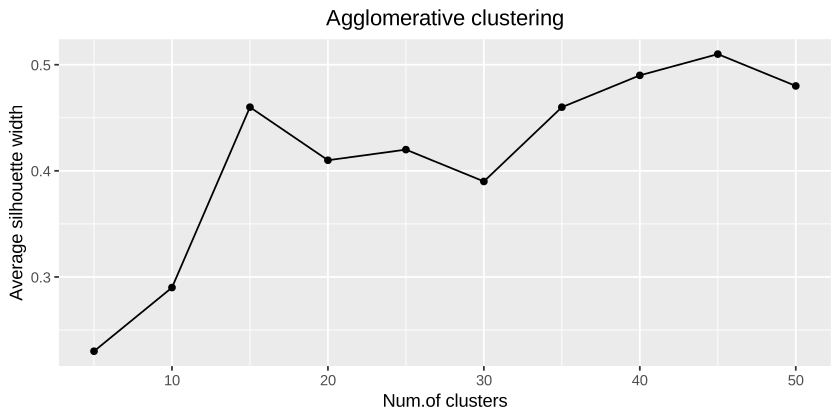
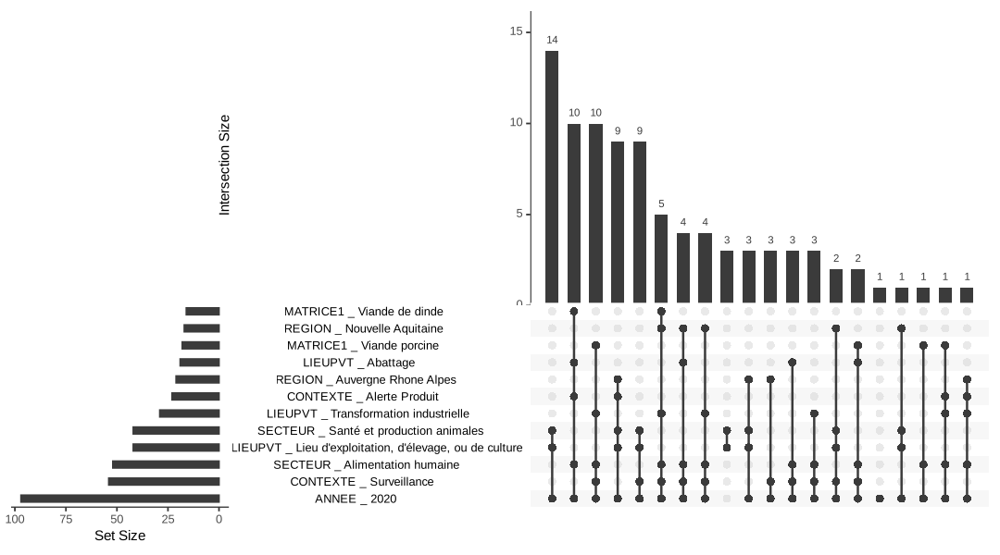

{strainselect} helps choosing which bacterial strains to sequence from a collection described by metadata (sampling context, matrix, region, sector, year…). It provides two methods:
- the clustering method, when the number of strains that can be sequenced is limited: strains are grouped into k clusters using the Gower distance and hierarchical clustering, and the best clustered strain of each cluster is selected, so that the selected strains are as different as possible;
- the profile method, when the number of strains to sequence is not limited: strains sharing exactly the same metadata are grouped, and one strain per group is selected, so that every distinct profile — including unique strains — is represented.

Documentation
📖 Website: https://lguillier.github.io/strainselect_package/
- Get started: both methods step by step;
- Reference: help pages of all functions.
Installation
Install the development version from GitHub:
# install.packages("remotes")
remotes::install_github("lguillier/strainselect_package", build_vignettes = TRUE)Example
The package ships with salmonella_strains, an example table of 100 Salmonella strains described by 22 variables. We base the selection on 6 of them and on the year of sampling.
library(strainselect)
prepared_data <- prepare_input(
salmonella_strains,
col_select = c("CONTEXTE", "MATRICE1", "REGION", "SECTEUR", "LIEUPVT"),
id = "IDENTIFIANT", date = "DATE_PRELEVEMENT", year = TRUE
)
#> no duplicate ID
#> selected metadata: CONTEXTE, MATRICE1, REGION, SECTEUR, LIEUPVT, ANNEE
head(prepared_data, 3)
#> CONTEXTE MATRICE1 REGION
#> 2020LSAL00151 Surveillance non spécifié Auvergne Rhone Alpes
#> 2020LSAL00152 Surveillance non spécifié Auvergne Rhone Alpes
#> 2020LSAL00163 Surveillance Viande de canard Nouvelle Aquitaine
#> SECTEUR LIEUPVT ANNEE
#> 2020LSAL00151 Eco-système Source/captage de l'eau 2020
#> 2020LSAL00152 Eco-système Source/captage de l'eau 2020
#> 2020LSAL00163 Alimentation humaine Transformation industrielle 2020Quick start: how many strains, and which ones?
select_strains() finds the optimal number of strains and takes into account the maximum number of strains you can sequence (n_max):
res <- select_strains(prepared_data, n_max = 20, seed = 1)
res
#> Strain selection (clustering method)
#> strains: 100 - distinct profiles: 61
#> optimal number of clusters (k_opt): 61
#> maximum number of strains (n_max): 20
#> selected strains: 20 (selected: 20)
#> optimal groups not represented: 41 out of 61The same with the profile method (one strain per group of identical strains, largest groups first):
select_strains(prepared_data, n_max = 20, method = "profile", seed = 1)
#> Strain selection (profile method)
#> strains: 100 - distinct profiles: 61
#> groups of identical strains: 61
#> maximum number of strains (n_max): 20
#> selected strains: 20 (selected: 20)
#> groups not represented: 41 out of 61Export the original metadata with the selection, and write an HTML report:
export_selection(res, data = salmonella_strains, id = "IDENTIFIANT",
file = "selection.csv")
report_selection(res, file = "selection_report.html",
data = salmonella_strains, id = "IDENTIFIANT")Clustering method, step by step
The average silhouette width helps choosing the number of clusters: look for a maximum or a plateau.
gower <- assess_gower(prepared_data, graph = FALSE)
stats <- cstats_table(gower$gower_dist, gower$aggl.clust.c, k = 50, step = 5)
Then select one strain per cluster, here 20 strains:
selection <- select_silhouette(prepared_data, gower$gower_dist, k = 20, seed = 1)
head(selection[, c("cluster", "size", "selected")])
#> cluster size selected
#> 2020LSAL00151 1 4 2020LSAL00802
#> 2020LSAL00152 1 4 2020LSAL00802
#> 2020LSAL00163 2 25 2020LSAL00487
#> 2020LSAL00167 2 25 2020LSAL00487
#> 2020LSAL00176 3 11 2020LSAL00177
#> 2020LSAL00177 3 11 2020LSAL00177
unique(selection$selected)
#> [1] "2020LSAL00802" "2020LSAL00487" "2020LSAL00177" "2020LSAL00854"
#> [5] "2020LSAL00454" "2020LSAL00720" "2020LSAL00506" "2020LSAL00550"
#> [9] "2020LSAL00660" "2020LSAL00668" "2020LSAL00724" "2020LSAL00790"
#> [13] "2020LSAL00912" "2020LSAL00792" "2020LSAL00866" "2020LSAL00892"
#> [17] "2020LSAL01016" "2020LSAL00994" "2020LSAL01040" "2020LSAL01188"Profile method: one strain per distinct profile
The binary table of modalities can be explored with an UpSet plot (here the 12 most frequent modalities):
upset_data <- prepare_upset(prepared_data)
UpSetR::upset(upset_data, nsets = 12, order.by = "freq", nintersects = 20,
mb.ratio = c(0.55, 0.45), text.scale = 1.1)
profiles <- define_profiles(upset_data)
selection <- select_profiles(profiles, prepared_data, seed = 1)
length(unique(selection$selected)) # number of strains to sequence
#> [1] 61Acknowledgements
cstats_table() and the Gower distance / hierarchical clustering workflow are adapted from Anastasia Reusova’s tutorial Hierarchical Clustering on Categorical Data in R (code).
This work was supported by funding from the European Union’s Horizon 2020 Research and Innovation programme under grant agreement No 773830: One Health European Joint Programme (project CARE: Cross-sectoral framework for quality Assurance Resources for countries in the European Union).